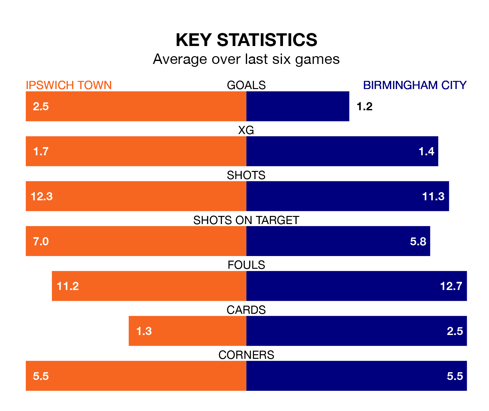

Ipswich Town are heavy favourites to keep all three points at home in Saturday's kick-off against Birmingham City.
Ipswich Town, who sit third in EFL Championship with 33 games played, are priced at 1.4 to seal victory at Portman Road.
Sitting 12 places and 31 points behind them in the table, Birmingham are 5.2 to win with *Betting Company*, while the draw is at 4.2.
With 65 goals in 33 games so far this season, Ipswich are the league's second-highest scorers with 2.0 goals per game. And they are conceding fewer than average, letting in 44 goals at a rate of 1.3 per game.
Birmingham, meanwhile, are below average scorers, with 1.2 goals per game, compared to a league average of 1.4. They have conceded 1.5 goals per game.
In the last 10 years, Ipswich and Birmingham have played each other on 12 occasions. They won three each, and they drew six times.
On average, Ipswich Town scored 1.3 goals and Birmingham City 1.4 in those matches.
Their last meeting was on November 4, when they played out a 2-2 draw.
Town's Leif Davis is the league's most creative player, racking up 12 assists in 30 appearances so far this season.
For City, Juninho Bacuna has set up the most goals, having laid on five assists in 31 games.
Ipswich Town are in reasonable form in EFL Championship, with three wins and two draws from their last six games.
With three wins and a draw over that period, Birmingham City's form is slightly worse – they have taken 10 points from 18, compared to the hosts' 11.
Ipswich's last match was on Tuesday, a 4-3 win against Rotherham United, with Wes Burns (two), Kieffer Moore and Omari Giraud-Hutchinson getting the goals for Ipswich Town.
Birmingham beat Sunderland 2-1 last time out, on February 17, with Jordan James and Koji Miyoshi on the scoresheet.
Updated: 10:08 (UTC), 23/02/24